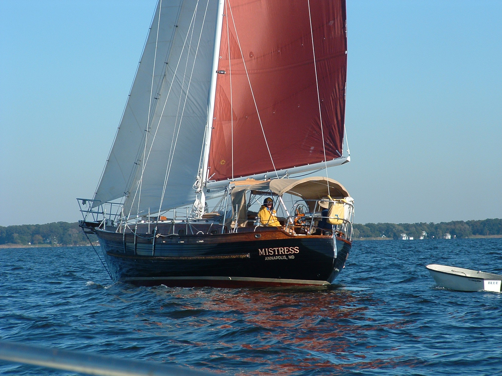
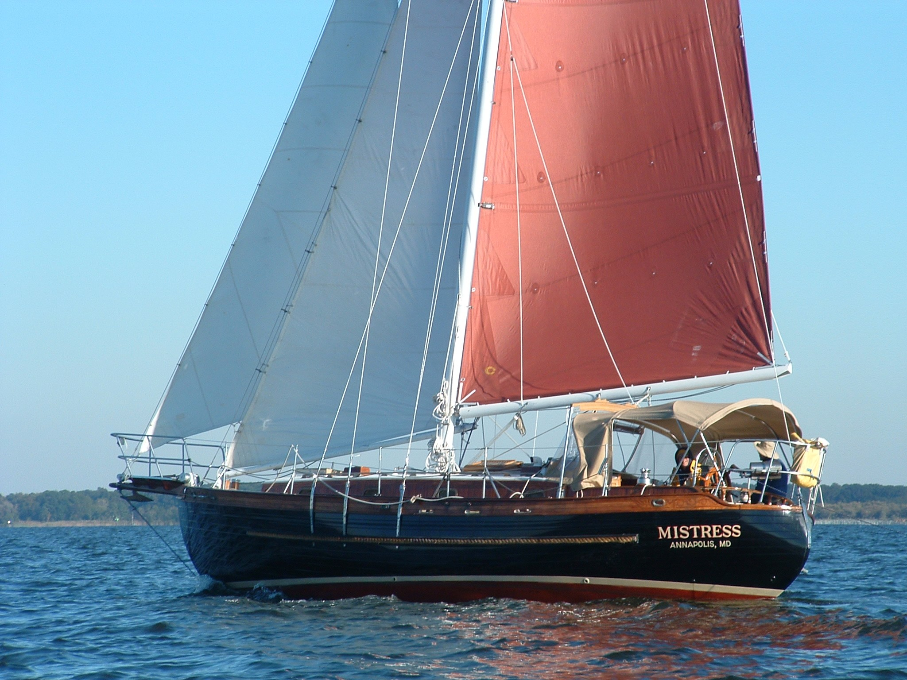
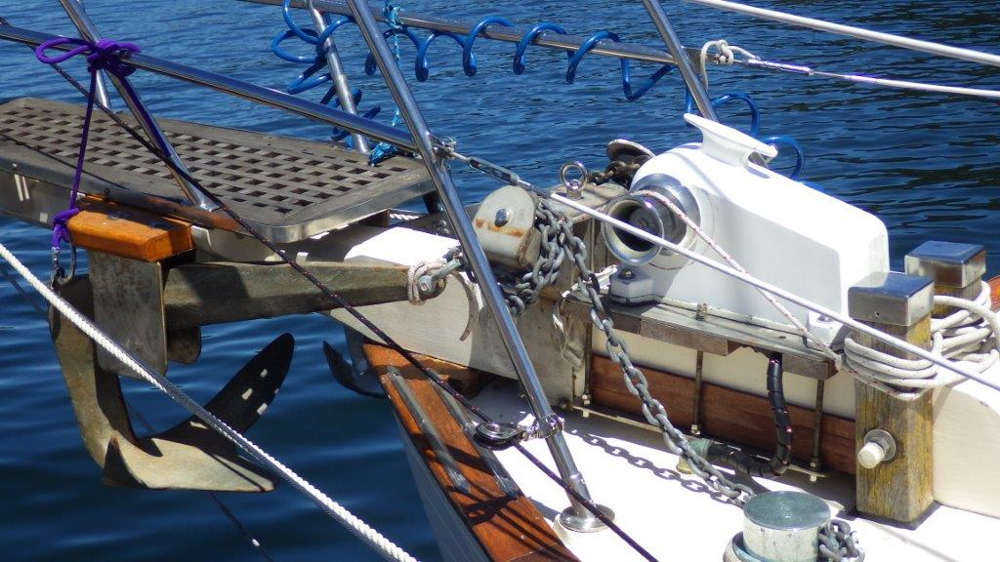

Tayana 37 A classic built for distance
Heavy-displacement long-keel cutter with canoe stern. Designed by Robert Perry, built by Ta Yang in Taiwan from 1976. Approximately 588 hulls produced.
Designed as a more capable response to the Westsail 32, the Tayana 37 pairs traditional double-ended lines with solid hand-laid fiberglass and a practical cutter rig. Originally the CT 37, it became one of the most numerous semi-custom offshore cruisers of its generation.
The standard configuration is a cutter; ketch and pilothouse versions also exist. Many remain in active long-distance service worldwide.
- Designer: Robert H. Perry
- Builder: Ta Yang Yacht Building, Taiwan
- Hull: solid GRP, modified long keel, cutaway forefoot
- Stern: canoe (Baltic-inspired)
- Primary rig: cutter
| LOA / LWL | 36.67 ft / 31.00 ft |
|---|---|
| Beam / Draft | ≈ 11.5 ft / ≈ 5.7 ft |
| Displacement / Ballast | 22,500 lb / ≈ 8,000 lb iron |
| Sail area (cutter) | ≈ 861 ft² |
| Fuel / Water | ≈ 90–100 gal each |
| Engine (original) | Yanmar 33–40 hp |
| SA/D · Ballast% · D/L | ≈ 17 · 35% · 337 |
| Comfort · Capsize · Hull speed | ≈ 41 · 1.63 · 7.46 kn |
Perry cut away the forefoot and used a Constellation-type rudder for better maneuverability while retaining full-keel directional stability. The cutter is weatherly and well suited to short-handed passagemaking.






Buyer’s Guide
The Tayana 37 was built with enough variation that two boats from the same year can need very different refits. Start with the work you can verify, then use the survey and sea trial to decide what the boat is worth to you.
Before you travel
Ask for the hull identification number, a recent survey and dated invoices or photos for deck work, tanks, chainplates, standing rigging and the engine. Ask which jobs are still open and whether the seller can arrange a haul-out and sea trial.
Early boats may be advertised as CT 37s. Most are cutters, and ketch and pilothouse versions also exist. The Mark II deck added a coaming around the back of the cockpit in 1981. Ask for photos of the actual deck, cockpit, mast step and interior. A Mark II can still have teak, and tank layouts vary by boat.
Where to focus the survey
Deck and leaks. Have the surveyor sound and moisture-check the deck, especially around teak fasteners, the mast step, the windlass and the stanchions. Ask where staining around portlights or inside the bulwarks starts. If the teak was removed, request photos showing how the screw holes and any damaged core were repaired.
Rig loads. Inspect the chainplates, their bolts and the structure they attach to. Ask the rigger to look closely at the mast support, the underside of the bowsprit and the bobstay fittings. If the boat has a wooden spar, use a rigger familiar with wood.
Hull and steering. During haul-out, inspect the bottom for blistering and grounding damage. Have the surveyor check the rudder’s lower support, its fasteners and any play in the rudder or steering gear.
Check the machinery under load
Locate each tank and confirm its material, age and access. An older black-iron diesel tank can be hard to inspect from above. Ask how the yard would get it out before budgeting a replacement. Also have the surveyor review shore power, battery cabling and any owner-installed wiring.
Tayanas came with several diesels, including Yanmars, Perkins and Volvos, and many have been repowered. Ask for a cold start and run the engine under load. Watch for persistent smoke, leaks, overheating and vibration. For a repower, check the installation records and have the mounts, exhaust and shaft alignment assessed.
Sail it the way you plan to use it
Take the helm upwind and see how the load changes as you trim or reef. Some examples develop appreciable weather helm. Sail shape and rig setup are worth checking if the wheel stays heavy. Try reversing under power and check whether you can reef and handle the staysail from positions that work for you. For solo sailing, check where you can clip in and how you would reach the foredeck.
Set an all-in budget
Keel Index’s November 22, 2026 snapshot of 15 U.S. listings reported a median asking price of $40,000. Use it as a dated reference. Compare boats with similar rigs, locations and refit histories, and look for actual closing prices where available.
Add haul-out, survey, travel or delivery and yard estimates for immediate work to your offer price. Keep a reserve for jobs that can only be priced after opening up the deck or removing a tank. A higher ask can make sense when invoices, inspection and sea trial confirm that the expensive work is already done.
Sources and further reading
Keel Index’s Tayana 37 buyer’s guide provides the listing snapshot and references to period documents. See Practical Sailor’s Tayana 37 review for construction and sailing observations, and the Tayana Owners Group for newsletters and owner refit accounts.
The Tayana 37s that have been part of the search.